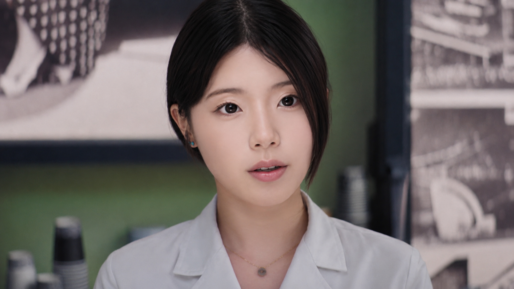
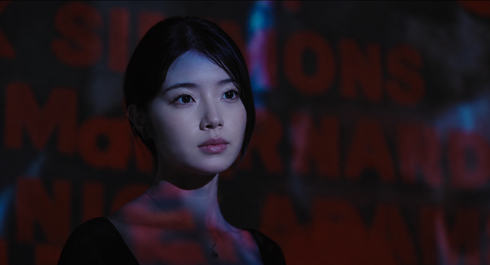
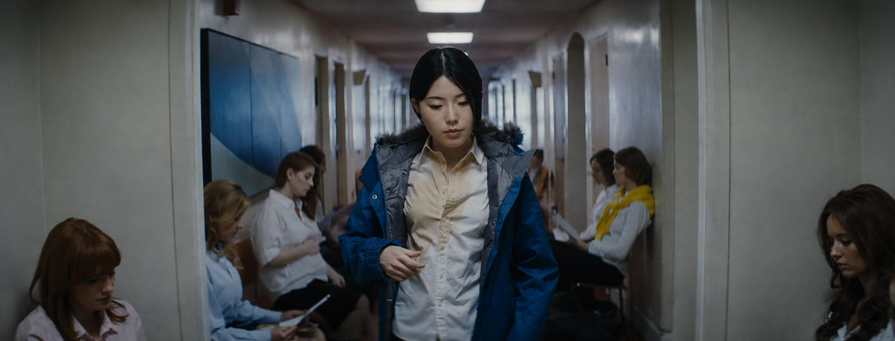
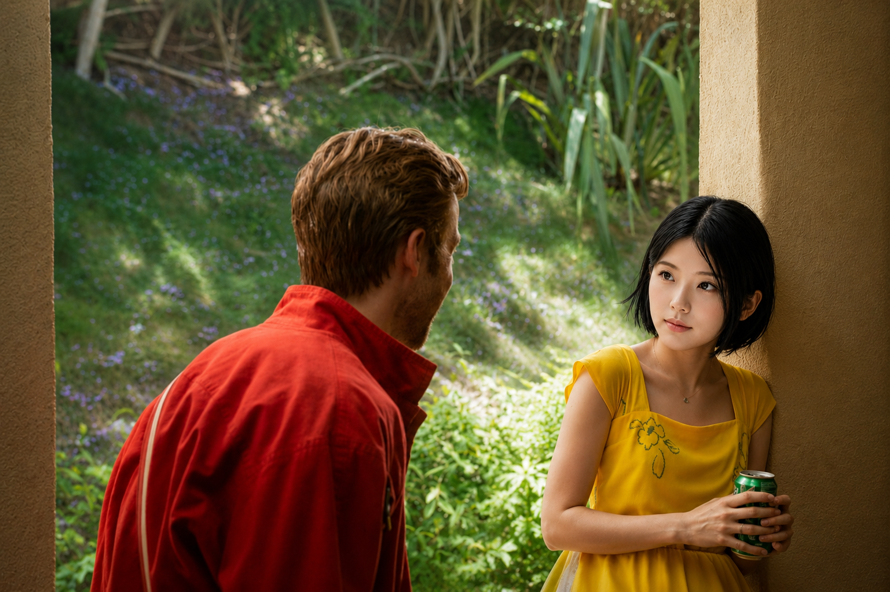

새로운 경험을 통해 성장하는 이야기




데이미언 셔젤 · 2004.11.28 · 24년
3남매 중 첫째로 태어나 평범한 중학교 생활을 보내던 그녀는, 자연스럽게 디자인에 끌리기 시작했다. 결국 디자인을 배우기 위해 디자인과가 있는 고등학교에 입학했고, 남들보다 이르게 사회에 나와 일을 시작했다. 반복되는 일상 속에서도 그녀는 틈이 생길 때마다 여행을 떠났다. 일본, 발리, 상하이, 태국. 각 나라의 문화와 음식, 거리의 분위기를 경험하며 그녀의 시선은 점점 더 자유롭고 넓어졌다. 그 여행들은 단순한 휴식이 아니었다. 세상에는 다양한 삶의 방식과 아름다움이 존재한다는 것을 배우는 시간이었다. 그리고 자신만의 시선으로 세상을 바라보는 사람이 되어가고 있었다.
김예원